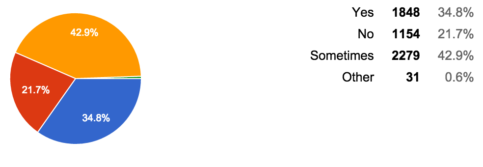
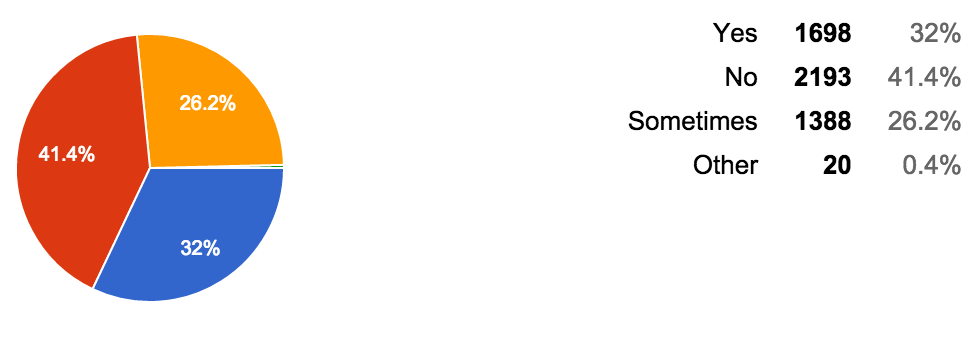
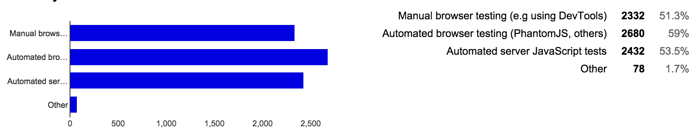
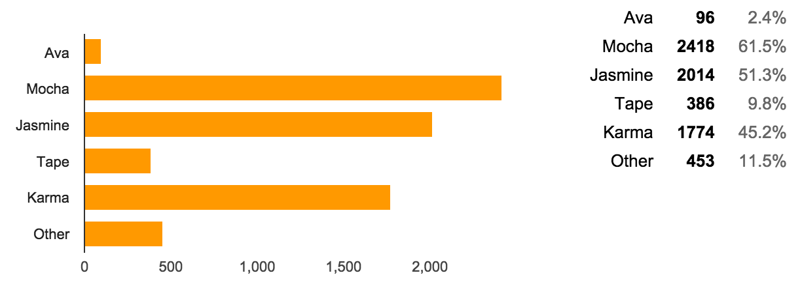
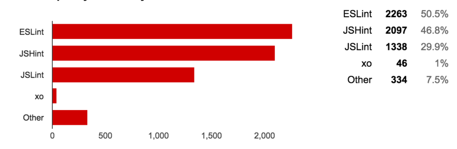
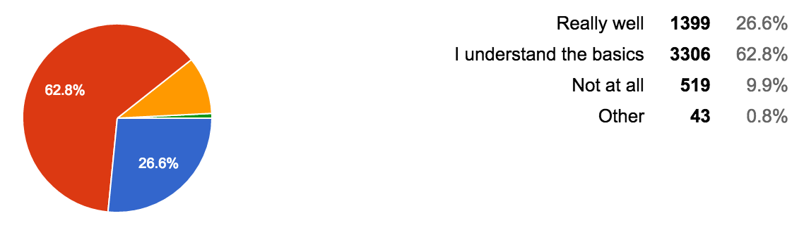

本文来源：sqrtthree
There were over 5000 responses, 5350 to be exact, and I can’t wait to share the details. Before that I want to thank everyone who chipped in. This is a great time to be a part of the JavaScript community, and I’m truly excited for things to come!
截止目前有超过了 5000 人参与了(该次调查)，准确的说是 5350 人。我迫不及待的想要和大家分享一下这次调查的细节。在分享之前我想要感谢参与调查的每一个人。这是 Javascript社区一个伟大的时刻，我对未来的事情感到无比激动。
I didn’t anticipate such high interest, and next time I’ll make some improvements to the format. Namely, I’ll put the survey up on GitHub first so that the community can collaborate on the questions and options for a couple of weeks before launching the survey. That way, I’ll be able to produce more accurate results and avoid complaints like “I am shocked you didn’t include Emacs!”.
我没有想到大家如此积极，下一次我一定会对版式做一些改进。换句话说，就是我会先将问卷调查放到 Github 上，以便于在开始调查之前，社区有一到两周的时间来收集改进问题和选项。这样，我就可以得到更精确的结果，也可以避免出现诸如 “我很震惊你竟然没有包含 Emacs” 这样的抱怨。
Now, onto the survey results. I’ll remain impartial in delivering the results, so that you can come to your own unbiased conclusions.
现在，基于调查结果。我将保持中立的态度发表一下调查结果，这样你就可以得出自己的公正的结论。
##What type of JavaScript do you write?
你写什么类型的 Javascript？
A whooping 97.4% of respondents write JavaScript for a web browser, while 37% of them write mobile web applications. Over 3000 of them – with 56.6% – also write server-side JavaScript. Among those who took the poll, 5.5% use JavaScript in some sort of embedded environment, such as Tessel or a Raspberry Pi.
有高达 97.4% 的受访者用 Javascript 写 web 浏览器程序，其中有 37% 的受访者写移动端 web 程序。超过 3000 人(56.6%) 也写服务端的 Javascript。在这些参与调查者的人中间，有 5.5% 的人还在一些嵌入式环境中使用Javascript，例如 Tessel 或 a Raspberry Pi (树莓派).
A few participants replied they use JavaScript in some other places, notably in developing CLI and desktop applications. A few also mentioned Pebble and Apple TV. These fell in the Other category, with 2.2% of the votes.
少数参与者表示他们也在其他一些地方使用 Javascript，尤其是在开发 CLI 和桌面应用方面。还有少数提到了 Pebble 和 Apple TV. 这些都归类在 Other 一类中，占总票数的 2.2%.
/24080029_u1Id.png "An screenshot of the percentages for the first question")
Where do you use JavaScript?
你在哪里使用 Javascript？
Unsurprisingly, 94.9% of voters use JavaScript at work. However, a large portion of the tallied – with 82.3% of the votes – also use it on side projects. Other responses included for teaching and learning, for fun, and for non-profits.
不出所料地，有 94.9% 的参与者在工作中使用 Javascript，但是，统计中也有很大一部分(占总票数的 82.3%) 参与者也在其他项目中使用。其他的回复则包括了教学，好玩，和非盈利目的的使用。
/24080030_z2Co.png "An screenshot of the percentages for the second question")
How long have you been writing JavaScript?
你写 Javascript 多长时间了？
Over 33% of the surveyed have been writing JavaScript code for over six years. Out of those who answered the poll, 5.2% started at most a year ago, 12.4% two years ago, and 15.1% three years ago. That makes it 32.7% people who started writing JavaScript in recent years, out of 5350 voters.
超过 33% 的受访者表示他们写 Javascript 代码已经超过了 6 年时间。除了这些人之外，有 5.2% 的人一年前开始写 Javascript 代码，12.4% 的人是两年前，还有 15.1% 的人是三年前。这说明在 5350 个投票者中，有 32.7% 的人是在近几年才开始写 Javascript 的。
/24080030_Nwcw.png "An screenshot of the percentages for the third question")
Which compile-to-JavaScript languages do you use, if any?
如果可以的话，你使用哪种 compile-to-JavaScript(编译为 JavaScript的) 语言？
A whooping 85% replied that they compile ES6 into ES5. Meanwhile 15% still use CoffeeScript, 15.2% use TypeScript, and a measly 1.1% reported they use Dart.
有高达 85% 的受访者表示他们使用 ES6 编译成 ES5。与此同时，有 15% 的人仍然使用 CoffeeScript，15.2% 的人使用 TypeScript，只有区区 1.1% 的人使用 Dart.
This was one of the questions I wish I’d approached more collaboratively, as it got 13.8% of “Other” responses. The vast majority of these answers were ClojureScript, elm, Flow, and JSX.
这是我想进一步探讨的问题之一，因为有 13.8% 的人选择了 “Other”，选择 “Other” 的绝大部分的回答是 ClojureScript, elm, Flow, 和 JSX.
/24080031_PbCR.png "An screenshot of the percentages for the fourth question")
What JavaScript stylistic choices do you prefer?
你更喜欢哪一种 Javascript 编程风格？
The vast majority of JavaScript developers who answered the poll seem to favor semicolons, at 79.9%. In contrast, 11% indicated they prefer not to use semicolons. When it comes to commas, 44.9% favor to place them after an expression, while 4.9% prefer to use comma-first syntax. When it comes to indentation, 65.5% prefer spaces, while 29.1% would rather use tabs.
回答这个问题的绝大多数开发者(79.9%)都选择了分号。相反，有 11% 的开发者指出更喜欢不使用分号。
逗号方面，44.9% 的开发者喜欢将逗号放在表达式的末尾，然而有 4.9% 的开发者喜欢先写逗号。
缩进方面，65.5% 的开发者更喜欢使用空格，然而有 29.1% 的开发者则更喜欢使用制表符(Tab)。
/24080031_Lbmd.png "An screenshot of the percentages for the fifth question")
Which ES5 features do you use?
你使用过 ES5 的哪些特性？
While 79.2% of respondents are on board with functional Array methods, and 76.3% indicated they use strict mode, Object.create sees a 30% adoption and getters and setters are only used by 28%.
79.2% 的受访者都使用过 Array(数组) 的一些实用的方法，76.3% 的开发者使用严格模式。30% 的开发者使用 Object.create，而使用过 getters 和 setters 的开发者仅占了 28%.
/24080031_XlDX.png "An screenshot of the percentages for the sixth question")
Which ES6 features do you use?
你使用过 ES6 的哪些特性？
Notably, arrow functions are the most used ES6 feature among those who took the poll: 79.6%. Let and const together took 77.8% of the pollsters, and promises are also strong with 74.4% adoption. Unsurprisingly, only 4% of the respondents have played around with proxies. Only 13.1% of users indicated they’ve used symbols, while over 30% say they use iterators.
显然，在这些投票中，箭头函数是使用最多的 ES6 特性，占了 79.6%。在所有调查者中，Let 和 const 加在一起一共占了 77.8% 。promises 也有 74.4% 的开发者采用。不出所料，只有 4% 的参与者使用 proxies，只有 13.1% 的用户表示他们使用 symbols，同时有超过 30% 的人说他们使用 iterators.
/24080031_kHLe.png "An screenshot of the percentages for the seventh question")
Do you write tests?
你写测试么？
While 21.7% never write any tests, most do write some tests, and 34.8% always write tests.
有 21.7% 的开发者表示他们从不写任何测试。大部分人偶尔写一些测试。34.8% 的人总是写测试。

Do you run Continuous Integration tests?
你运行持续集成测试吗？
There’s a similar story with CI, although many more people don’t use a CI server – over 40%. Almost 60% of respondents use CI at least sometimes, of which 32% always run tests on a CI serve.
和 CI 类似，尽管许多人(超过40%)不使用 CI 服务器，但是差不多有 60% 的人表示在少数时间会使用 CI，其中有 32% 的人总是在 CI 服务器上运行测试代码。

How do you run tests?
你怎么运行测试代码？
59% like to run automated browser tests with PhantomJS or similar, and 51.3% also prefer to perform manual testing on a web browser. Automation in server-side tests amounts to 53.5% votes.
59% 的开发者喜欢使用 PhantomJS 或是类似的工具来运行自动化浏览器测试。也有 51.3% 的开发者喜欢在 web 浏览器上手动运行测试。有 53.5% 的投票者会在服务器端进行自动化测试。

What unit testing libraries do you use?
你使用过哪个单元测试库？
It would seem most voters prefer either Mocha or Jasmine to run their JavaScript tests, although Tape received a healthy 9.8% of the ballots.
似乎大部分投票者都使用 Mocha 或是 Jasmine 来运行他们的 Javascript 测试用例。而 Tape 收到了 9.8% 的选票。

What code quality tools do you use?
你使用过哪个代码质量检测工具？
It would seem like respondents are divided between ESLint and JSHint, but JSLint is surprisingly strong after all these years, at almost 30%.
看起来受访者在 ESLint 和 JSHint之间分成了两派，但是 JSLint 还是有差不多 30% 的投票率，在这么多年之后势头还是惊人的强劲。

How do you prefer handling client-side dependencies?
你通过哪种方式来处理客户端依赖关系？
npm took over as the client-side dependency management system of choice, with 60% of the votes casted their way. Bower still holds 20% of the audience, and plain old <script> downloading and insertion managed to get 13.7% votes.
npm 接管了客户端依赖管理系统的天下，有超过 60% 的投票就是证明它的方式。Bower 仍然有 20% 的观众，而通过下载和插入 <script> 标签来管理的普通旧式方法则获得了 13.7% 的选票。
/24080035_Kgea.png "An screenshot of the percentages for the 13th question")
What’s your preferred build script solution?
你首选的脚本构建方案是什么？
Build tooling choices are divided, partially due to the healthy amount of different options to choose from. Gulp is the most popular, with over 40% of the votes. Using npm run is close by, at 27.8%, and Grunt got 18.5% of the audience.
构建工具的选择很分散，部分原因是有太多的不同的选项可供选择。Gulp 最流行，有着超过 40% 的选票，紧接着的是使用 npm run，有 27.8%。Grunt 得到了 18.5% 的支持者。
/24080036_uYFP.png "An screenshot of the percentages for the 14th question")
What’s your preferred JavaScript module loading tool?
你首选的 JavaScript 模块加载工具是什么？
At the moment, it would seem as most people are torn between Browserify and Webpack, although the latter leads by almost 7 points. 29% of users indicated they use transpile Babel modules first, before presumably using one of the two aforementioned tools to pack their modules together.
目前，看起来大部分开发者都在 Browserify 和 Webpack 之间徘徊，而后者高出了 7 个百分点。29% 的用户表示他们在使用前面提到的这两个工具打包他们的模块之前会先使用 Babel 进行转换。
/24080037_oN1x.png "An screenshot of the percentages for the 15th question")
What libraries do you use?
你使用过哪些库？
In retrospect, this was one of the questions which would’ve benefitted a lot from collaborative editing. jQuery is still going strong, with over 50% of votes casted its way. Lodash and underscore are used by a significant portion of the JavaScript population that participated in the voting, while the xhr micro library only clocked in 8% of the votes.
现在回顾起来，这是一个受益于协同编辑的问题之一。jQuery 获得了超过 50% 的选票证明了它的势头依然很强劲。在参与投票的 JavaScript 使用者中，Lodash 与 Underscore 也被很大一部分开发者使用。 xhr 微型库只获得了 8% 的票数。
/24080037_1pGV.png "An screenshot of the percentages for the 16th question")
What frameworks do you use?
你使用过哪些框架？
Unsurprisingly, React and Angular are leading the pack. Backbone is still in a healthy position, with 22.8% of the votes.
毫无意外的，React 和 Angular 遥遥领先于其他框架，有着 22.8% 的 Backbone 仍然处在一个安全的位置。
/24080038_dP9l.png "An screenshot of the percentages for the 17th question")
Do you use ES6…
你使用 ES6 吗？
Responses were quite divided in this question, with almost 20% never using ES6, over 10% using it exclusively, close to 30% using it extensively and almost 40% using it occasionally.
受访者在这个问题上的反应相当分歧，有近 20% 的人几乎从不使用 ES6，超过 10% 的人只写 ES6，接近 30% 的人广泛使用 ES6，近 40% 的人偶尔使用。
/24080039_yFlo.png "An screenshot of the percentages for the 18th question")
Do you know what’s coming in ES2016?
你知道在即将到来的 ES2016 中会有什么特性吗？
Roughly speaking, half of the voters don’t know what’s coming in ES2016, while the other half have an idea of what’s coming next.
粗略地说，有超过一半的投票者表示不知道即将到来的 ES2016 中会有什么特性。另一半则对接下来的版本有所了解。
/24080039_MFYg.png "An screenshot of the percentages for the 19th question")
Do you understand ES6?
你了解 ES6 吗？
Over 60% of respondents seem to understand the basics, while 10% have no idea about ES6 and over 25% consider they understand ES6 really well.
超过 60% 的受访者似乎了解基本的概念。10% 的人对 ES6 毫不了解，有 25% 的受访者认为他们非常了解 ES6。

Would you say ES6 is an improvement?
你认为 ES6 是一个进步吗？
Almost 95% of the respondents consider ES6 to be an improvement to the language. I’ll congratulate TC39 members next time I run into them!
超过 95% 的受访者认为 ES6 是对于 JavaScript 语言来说是一个进步，下一次碰到 TC39 的会员我得祝贺他们。
/24080040_ee9w.png "An screenshot of the percentages for the 21th question")
What are your preferred text editors?
你更喜欢什么文本编辑器？
Again, very divided because of the variety of options. Over half the respondents like Sublime Text, and over 30% like to use Atom, its open-source clone. Over 25% voted for WebStorm and also for vi/vim.
再一次，由于存在各种各样的选择导致结果非常分散。超过一半的受访者喜欢 Sublime Text，超过 30% 的受访者喜欢使用 atom 和 它的开源克隆版。超过 25% 的选票投给了 WebStorm，也有 25% 的选票投给了 vi/vim.
/24080041_2a19.png "An screenshot of the percentages for the 22th question")
What’s your preferred development OS?
你更喜欢使用什么操作系统作为开发环境?
Over 60% of voters use Mac, while Linux and Windows users are close to 20% each.
超过 60% 的投票者使用 Mac，使用 Linux 和 Windows 的用户都接近 20%。
/24080041_mUlt.png "An screenshot of the percentages for the 23th question")
How do you find reusable code, libraries and tools?
你是通过哪种方式搜索到可重用的代码、库和工具的？
Respondents seem to favor GitHub and search engines, but there’s also a healthy dose of blogs, Twitter, and the npm website being consumed.
受访者似乎更青睐于 GitHub 和搜索引擎，但是也有一部分人使用博客，Twitter 和 npm 网站。
/24080042_4JE9.png "An screenshot of the percentages for the 24th question")
Do you engage in social JavaScript events?
你参加过 Javascript 的社交活动吗？
Almost 60% have attended at least a conference, while 74% indicated they like going to meetups.
有近 60% 的人参加过至少一次，74% 的人表示他们喜欢参加聚会。
/24080043_3JYw.png "An screenshot of the percentages for the 25th question")
What browsers do you support in your JavaScript applications?
在你的 Javascript 应用中，你都支持哪些浏览器？
Quite divided answers, but fortunately most of respondents don’t have to deal with customers on IE6 anymore.
回答相当分散，但是好在大多数受访者表示他们不再处理使用 IE6 的客户(的问题)了。
/24080043_t4Em.png "An screenshot of the percentages for the 26th question")
Do you learn about JavaScript latest features on a regular basis?
你会定期了解有关 Javascript 的最新特性吗？
Around 80% of respondents try and stay up to date when it comes to the latest JavaScript features.
有 80% 的受访者会尝试实时了解并持续学习 Javascript 的最新特性。
/24080043_Ro7g.png "An screenshot of the percentages for the 27th question")
Where do you learn about the latest JavaScript features?
你在哪了解最新的 JavaScript 特性？
Unsurprisingly, the top-notch Mozilla Developer Network is leading the pack in terms of JavaScript documentation and news. JavaScript Weekly is also a very popular source of news and articles at almost 40% of respondents.
不出所料地，Mozilla 开发者网络 在 Javascript 文档和新闻方面处于领先地位。JavaScript 周刊 也是一个非常受欢迎的新闻和文章的直接来源，它有着超过 40% 的投票。
/24080044_nBpl.png "An screenshot of the percentages for the 28th question")
Which of these features have you heard about?
你听说过下面哪些新特性？
Over 85% of voters have heard about ServiceWorker, although I’d be curious to know how many of those have played around with it!
超过 85% 的人听说过 ServiceWorker，我很想知道这些人中有多少人使用过它。
/24080044_DHDx.png "An screenshot of the percentages for the 29th question")
What languages do you use primarily, besides JavaScript?
除了 JavaScript，你还主要使用哪些语言？
There’s so many languages to choose from, I was bound to forget a few, but the results speak for themselves.
这有太多的语言可供选择，我肯定会漏掉一些。但是结果不言自明。
/24080045_WoMC.png "An screenshot of the percentages for the 30th question")